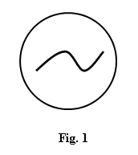
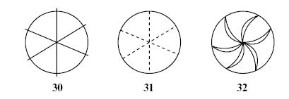

Part 1
From a number of recent studies, it has become clear that blind people can appreciate the use of outlines and perspectives to describe the arrangement of objects and other surfaces in space. But pictures are more than literal representations. This fact was drawn to my attention dramatically when a blind woman in one of my investigations decided on her own initiative to draw a wheel as it was spinning. To show this motion, she traced a curve inside the circle (Fig. 1). I was taken aback, lines of motion, such as the one she used, are a very recent invention in the history of illustration. Indeed, as art scholar David Kunzle notes, Wilhelm Busch, a trend-setting nineteenth-century cartoonist, used virtually no motion lines in his popular figure until about 1877.
When I asked several other blind study subjects to draw a spinning wheel, one particularly clever rendition appeared repeatedly: several subjects showed the wheel's spokes as curves lines. When asked about these curves, they all described them as metaphorical ways of suggesting motion. Majority rule would argue that this device somehow indicated motion very well. But was it a better indicator than, say, broken or wavy lines or any other kind of line, for that matter? The answer was not clear. So I decided to test whether various lines of motion were apt ways of showing movement or if they were merely idiosyncratic marks. Moreover, I wanted to discover whether there were differences in how the blind and the sighted interpreted lines of motion.
To search out these answers, I created raised-line drawings of five different wheels, depicting spokes with lines that curved, bent, waved, dashed and extended beyond the perimeters of the wheel. I then asked eighteen blind volunteers to feel the wheels and assign one of the following motions to each wheel: wobbling, spinning fast, spinning steadily, jerking or braking. My control group consisted of eighteen sighted undergraduates from the University of Toronto.
All but one of the blind subjects assigned distinctive motions to each wheel. Most guessed that the curved spokes indicated that the wheel was spinning steadily; the wavy spokes, they thought; suggested that the wheel was wobbling, and the bent spokes were taken as a sign that the wheel was jerking. Subjects assumed that spokes extending beyond the wheel's perimeter signified that the wheel had its brakes on and that dashed spokes indicated the wheel was spinning quickly.
In addition, the favoured description for the sighted was favoured description for the blind in every instance. What is more, the consensus among the sighted was barely higher than that among the blind. Because motion devices are unfamiliar to the blind, the task I gave them involved some problem solving. Evidently, however, the blind not only figured out the meaning for each of the motion, but as a group they generally came up with the same meaning at least as frequently as did sighted subjects.
Part 2
We have found that the blind understand other kinds of visual metaphors as well. One blind woman drew a picture of a child inside a heart-choosing that symbol, she said, to show that love surrounded the child. With Chang Hong Liu, a doctoral student from china, I have begun exploring how well blind people understand the symbolism behind shapes such as hearts that do not directly represent their meaning.
We gave a list of twenty pairs of words to sighted subjects and asked them to pick from each pair the term that best related to a circle and the term that best related to assure. For example, we asked: what goes with soft? A circle or a square? Which shape goes with hard?
Words associated Agreement among with circle/square subjects(%)
SOFT-HARD 100 MOTHER-FATHER 94 HAPPY-SAD 94 GOOD-EVIL 89 LOVE-HATE 89 ALIVE-DEAD 87 BRIGHT-DARK 87 LIGHT-HEAVY 85 WARM-COLD 81 SUMMER-WINTER 81 WEAK-STRONG 79 FAST-SLOW 79 CAT-DOG 74 SPRING-FALL 74 QUIET-LOUD 62 WALKING-STANDING 62 ODD-EVEN 57 FAR-NEAR 53 PLANT-ANIMAL 53 DEEP-SHALLOW 51 |
Fig. 2- Subjects were asked which word in each pair fits with a circle and which with a square.
These percentages show the level of consensus among sighted subjects.
All our subjects deemed the circle soft and the square hard. A full 94% ascribed happy to the circle, instead of sad. But other pairs revealed less agreement: 79% matched fast to slow and weak to strong, respectively. And only 51% linked deep to circle and shallow to square. (see Fig. 2) When we tested four totally blind volunteers using the same list, we found that their choices closely resembled those made by the sighted subjects. One man, who had been blind since birth, scored extremely well. He made only one match differing from the consensus, assigning 'far' to square and 'near' to circle. In fact, only a small majority of sighted subjects, 53%, had paired far and near to the opposite partners. Thus we concluded that the blind interprets abstract shapes as sighted people do.
Questions :
Choose the correct letter, A, B, C or D.
Write your answers in boxes 27 –29 on your answer sheet.
27 In the first paragraph, the writer makes the point that blind people
A. may be interested in studying art.
B. can draw outlines of different objects and surfaces.
C. can recognise conventions such as perspective.
D. can draw accurately.
28 The writer was surprised because the blind woman
A. drew a circle on her own initiative.
B. did not understand what a wheel looked like.
C. included a symbol representing movement.
D. was the first person to use lines of motion.
29 From the experiment described in Part 1, the writer found that the blind subjects
A. had good understanding of symbols representing movement.
B. could control the movement of wheels very accurately.
C. worked together well as a group in solving problems.
D. got better results than the sighted undergraduates.
Questions 30 –32
Look at the following diagrams (Questions 30 –32), and the list of types of movement below. Match each diagram to the type of movement A–E generally assigned to it in the experiment. Choose the correct letter A–E and write them in boxes 30–32 on your answer sheet.

A steady spinning B jerky movement C rapid spinning D wobbling movement E use of brakes |
Questions 33 –39
Complete the summary below using words from the box. Write your answers in boxes 33 –39 on your answer sheet. NB You may use any word more than once.
In the experiment described in Part 2, a set of word 33.......…… was used to investigate whether blind and sighted people perceived the symbolism in abstract 34.....…...… in the same way. Subjects were asked which word fitted best with a circle and which with a square. From the 35...…...… volunteers, everyone thought a circle fitted ‘soft ’while a square fitted ‘hard’. However, only 51% of the 36.......…… volunteers assigned a circle to 37.....…… . When the test was later repeated with 38...…...… volunteers, it was found that they made 39...…...… choices.
associations blind deep hard hundred identical pairs shapes sighted similar shallow soft words |
Question 40
Choose the correct letter A, B, C or D. Write your answer in box 40 on your answer sheet.
Which of the following statements best summarises the writer ’s general conclusion?
A The blind represent some aspects of reality differently from sighted people.
B The blind comprehend visual metaphors in similar ways to sighted people.
C The blind may create unusual and effective symbols to represent reality.
D The blind may be successful artists if given the right training.
Click the button to Show/ Hide Answers
For the answer explanation visit -